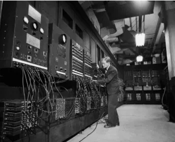
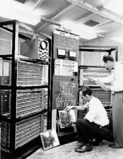
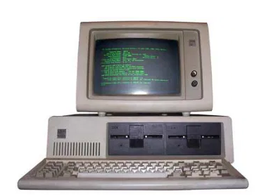
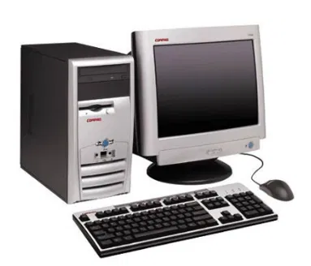
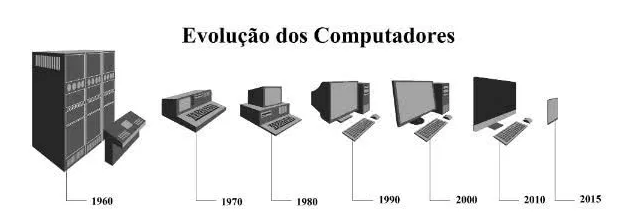

INSTRUÇÕES:Neste trecho, coloque com suas palavras o que entendeu sobre o assunto.
Não esqueça de colocar links para outros sites e também de formatar o texto com
negrito, itálico e sublinhado quando necessário.
O computador, tal qual conhecemos hoje, passou por diversas transformações e foi se aperfeiçoando ao longo do tempo, acompanhando o avanço das áreas da matemática, engenharia, eletrônica. É por isso que não existe somente um inventor.
De acordo com os sistemas e ferramentas utilizados, a história da computação está dividida em quatro períodos.
Primeira Geração (1951-1959)
Os computadores de primeira geração funcionavam por meio de circuitos e válvulas eletrônicas. Possuíam o uso restrito, além de serem imensos e consumirem muita energia.
Um exemplo é o ENIAC (Eletronic Numerical Integrator and Computer) que consumia cerca de 200 quilowatts e possuía 19.000 válvulas.

ENIAC (Eletronic Numerical Integrator and Computer)
Segunda Geração (1959-1965)
Ainda com dimensões muito grandes, os computadores da segunda geração funcionavam por meio de transistores, os quais substituíram as válvulas que eram maiores e mais lentas. Nesse período já começam a se espalhar o uso comercial.

Computador da segunda geração com transistores
Terceira Geração (1965-1975)
Os computadores da terceira geração funcionavam por circuitos integrados. Esses substituíram os transistores e já apresentavam uma dimensão menor e maior capacidade de processamento.
Foi nesse período que os chips foram criados e a utilização de computadores pessoais começou.

Computador da terceira geração com circuitos integrados
Quarta Geração (1975-até os dias atuais)
Com o desenvolvimento da tecnologia da informação, os computadores diminuem de tamanho, aumentam a velocidade e capacidade de processamento de dados. São incluídos os microprocessadores com gasto cada vez menor de energia.
Nesse período, mais precisamente a partir da década de 90, há uma grande expansão dos computadores pessoais.

Computador da quarta geração
Além disso, surgem os softwares integrados e a partir da virada do milênio, começam a surgir os computadores de mão. Ou seja, os smartphones, iPod, iPad e tablets, que incluem conexão móvel com navegação na web.

Segundo a classificação acima, nós pertencemos à quarta geração dos computadores, o que revela uma evolução incrível nos sistemas de informação.
Um ponto de destaque é que a evolução dos computadores ocorria de maneira mais lenta. Com o desenvolvimento da sociedade, meios de comunicação e a divulgação científica podemos ver a evolução dessas máquinas em dias ou meses.
Alguns estudiosos preferem acrescentar a “Quinta Geração de Computadores” com o aparecimento dos supercomputadores, utilizados por grandes corporações como a NASA.
Nessa geração, é possível avaliar a evolução da tecnologia multimídia, da robótica e da internet.
Futuro
Há pesquisas ativas para criar computadores não clássicos a partir de muitos novos tipos promissores de tecnologia, como computadores ópticos, computadores de DNA, computadores neurais e computadores quânticos. A maioria dos computadores são universais e são capazes de calcular qualquer função computável, e são limitados apenas pela sua capacidade de memória e velocidade de operação. No entanto, diferentes designs de computadores podem proporcionar desempenhos muito diferentes para problemas específicos; por exemplo, computadores quânticos podem quebrar alguns algoritmos de criptografia modernos (por fatoração quântica) muito rapidamente. De todas essas máquinas abstratas, um computador quântico é a mais promissora para revolucionar a computação.